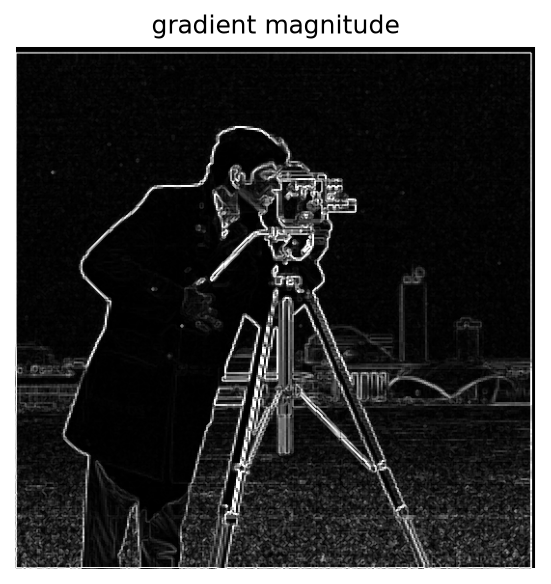
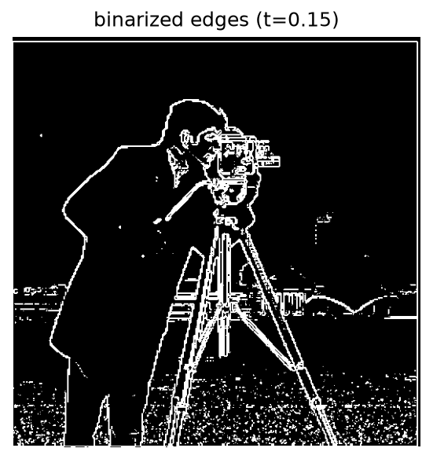
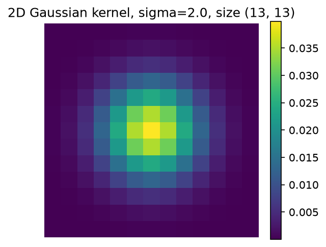
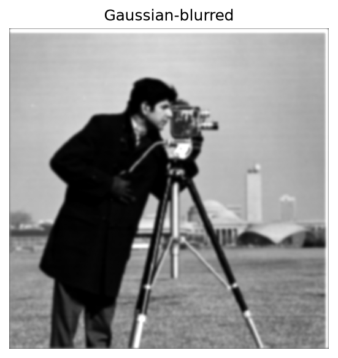
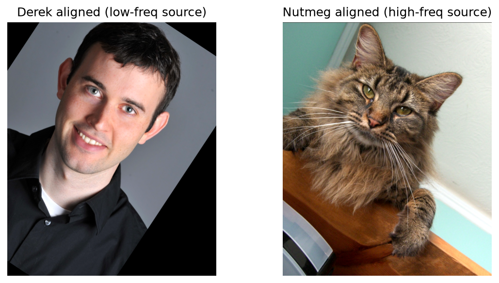
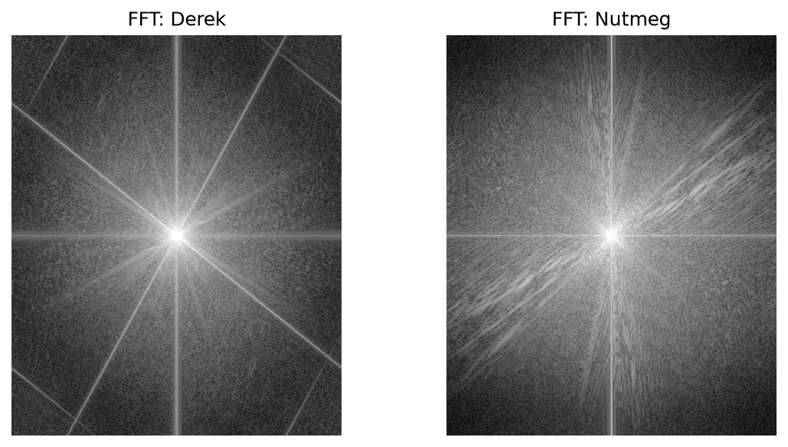
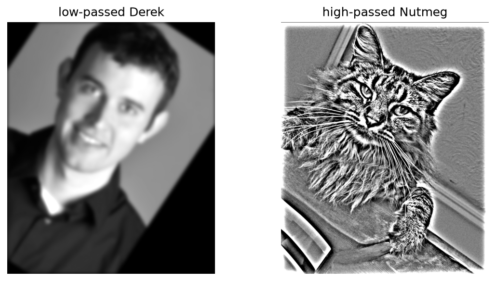
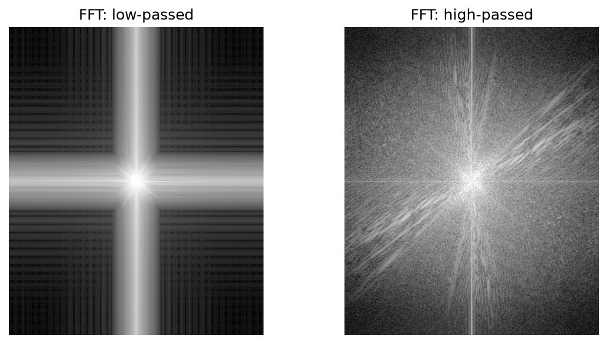
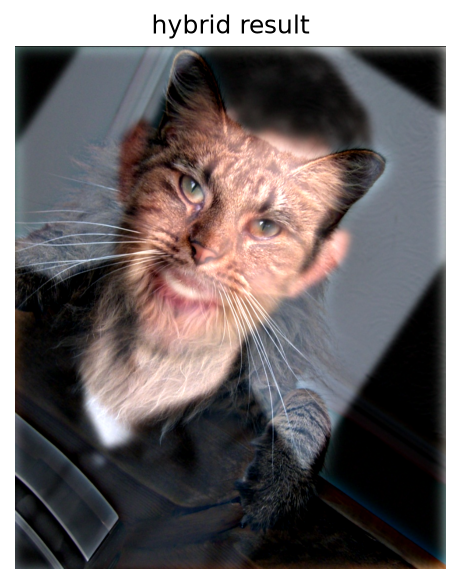

CS180 · Fall 2026 · Project 2
Convolution from scratch, edges, unsharp masking, hybrid images, and multiresolution blending.
Part 1 · Fun with filters
Convolution slides a flipped copy of the kernel over the image and takes a dot product at every position. Both versions below flip the kernel with np.flip, zero-pad the image first, and support mode="same" (output is the same size as the input) and mode="full" (every position where the kernel touches the image). The four-loop version does each dot product one multiply-add at a time. The two-loop version keeps the loops over output pixels but lets numpy do the patch multiply-and-sum.
def _pad_for(kernel, mode):
kh, kw = kernel.shape
if mode == "same":
return kh // 2, kw // 2
if mode == "full":
return kh - 1, kw - 1
raise ValueError("mode must be 'same' or 'full'")
def convolve_four_loops(image, kernel, mode="same"):
image = np.asarray(image, dtype=np.float64)
kernel = np.flip(np.asarray(kernel, dtype=np.float64))
kh, kw = kernel.shape
pad_h, pad_w = _pad_for(kernel, mode)
padded = np.pad(image, ((pad_h, pad_h), (pad_w, pad_w)))
out_h = image.shape[0] if mode == "same" else image.shape[0] + kh - 1
out_w = image.shape[1] if mode == "same" else image.shape[1] + kw - 1
output = np.zeros((out_h, out_w))
for i in range(out_h):
for j in range(out_w):
for m in range(kh):
for n in range(kw):
output[i, j] += padded[i + m, j + n] * kernel[m, n]
return output
def convolve_two_loops(image, kernel, mode="same"):
image = np.asarray(image, dtype=np.float64)
kernel = np.flip(np.asarray(kernel, dtype=np.float64))
kh, kw = kernel.shape
pad_h, pad_w = _pad_for(kernel, mode)
padded = np.pad(image, ((pad_h, pad_h), (pad_w, pad_w)))
out_h = image.shape[0] if mode == "same" else image.shape[0] + kh - 1
out_w = image.shape[1] if mode == "same" else image.shape[1] + kw - 1
output = np.zeros((out_h, out_w))
for i in range(out_h):
for j in range(out_w):
output[i, j] = np.sum(padded[i:i + kh, j:j + kw] * kernel)
return outputThe filters I run on a grayscale selfie: a 9×9 box filter, and the finite differences D_x and D_y.
box_9 = np.ones((9, 9)) / 81.0
D_X = np.array([[1, 0, -1]], dtype=np.float64)
D_Y = np.array([[1], [0], [-1]], dtype=np.float64)Because the kernel gets flipped, [1, 0, -1] ends up computing I(x+1) − I(x−1). Bright in Dx means brightness is increasing to the right, bright in Dy means it's increasing going down. So Dx lights up on vertical edges and Dy on horizontal ones.
I compared my implementation against scipy.signal.convolve2d(..., mode="same", boundary="fill", fillvalue=0). On the 9×9 box, my two-loop output matches to 5.55e-16 (rounding error). Dx and Dy match exactly, since the kernel entries are 0 and ±1 and there's nothing to round.
| method | 9×9 box: time | max err | Dx (1×3): time | max err |
|---|---|---|---|---|
| four loops | 7.1220 s | 1.11e-15 | 0.2922 s | 0 |
| two loops | 0.6672 s | 5.55e-16 | 0.5647 s | 0 |
| scipy | 0.0272 s | — | 0.037 s | — |
The four-loop version scales heavily with the kernel size: it takes 7.1220 s for the 81-tap box filter versus 0.2922 s for the 3-tap Dx filter. The two-loop version costs around 0.56–0.67 s regardless of kernel size because it pays fixed Python overhead for slicing and summing per pixel even when there are only three taps to add.
So the two-loop version wins by about 10.7× on the 81-tap box, but on the 3-tap Dx filter it actually loses to the four-loop version. Fewer taps means less to vectorize and the same fixed slice overhead. SciPy beats both by a wide margin because the whole loop runs in compiled C.
On boundaries: I zero-pad, so anything outside the frame counts as black, the same as scipy's boundary="fill" fillvalue=0. That means the box blur averages black into pixels near the border, and Dx/Dy compare the outermost pixels against 0, which makes a fake edge along the frame.
The partial derivatives are Ix = I ∗ Dx and Iy = I ∗ Dy, computed with scipy.signal.convolve2d on the cameraman image.
The gradient magnitude, √(Ix² + Iy²), gives edge strength regardless of direction. It's also noisy, with texture in the grass and the sky producing magnitudes comparable to some real edges. The aim is to find a good balance between detecting real edges and suppressing noise.
At t = 0.05 and 0.1 a lot of speckle survives in the flat regions (sky, grass). By t = 0.3 real edges start breaking up and disappearing, like the building windows and the faint horizon line. I went with t = 0.15, which is high enough to drop most of the sensor-noise "edges", but low enough to keep the outline of real structure like the tripod legs and windows.


Differentiation reacts to pixel-scale variation, which is why 1.2 is quite noisy. A Gaussian smooths that away before we differentiate. I build the 2D Gaussian by taking the outer product of a 1D kernel from cv2.getGaussianKernel with itself, truncated at about ±3σ (size 2·round(3σ)+1), and get the DoG filters by convolving that Gaussian with D_x and D_y.
def gaussian_kernel_2d(sigma, ksize=None):
if ksize is None:
ksize = int(2 * round(3 * sigma) + 1)
k1d = cv2.getGaussianKernel(ksize, sigma)
return k1d @ k1d.T
def dog_filters(sigma, ksize=None):
gaussian = gaussian_kernel_2d(sigma, ksize)
dog_x = convolve2d(gaussian, D_X, mode="same", boundary="fill", fillvalue=0)
dog_y = convolve2d(gaussian, D_Y, mode="same", boundary="fill", fillvalue=0)
return dog_x, dog_yAt σ = 0.5 there's barely any smoothing, so the gradient still has the same speckle as the raw finite difference. By σ = 4 most of the face and the tripod start to disappear. σ = 2 (a 13×13 kernel) gave me a mostly continuous outline of the photographer and tripod with almost none of the sky-and-grass noise.


The smoothed version has far less speckle in flat regions, because blurring averages out pixel-to-pixel noise before we differentiate it. The cost is that fine detail gets smoothed away too like some of the building windows.
I didn't reuse t = 0.15 for the smoothed image. Smoothing changes the scale of the gradient values, so a threshold tuned on the noisy version might not transfer. Instead I excluded a border wide enough to cover the kernel radius plus the derivative's own one-pixel zero-padding effect (6 + 1 = 7 px for the 13×13 kernel), and took the 90th percentile of the positive values in the interior. That gave t = 0.0769.
Lower percentiles (p80, p85) leave residual speckle in the coat and background, while p95 and p98 break up subtle contours. The 90th percentile (p90, corresponding to t = 0.0769) yields clean, continuous outlines at the cost of some fine detail.
Convolution is associative, so (G ∗ I) ∗ Dx = I ∗ (G ∗ Dx). That is, instead of blurring and then differentiating, I can fold both into a single DoG filter and convolve the image once.
The two routes agree visually, confirming that convolving with the combined DoG filter is the same operation as blurring first and differentiating second.
Part 2 · Fun with frequencies
A Gaussian blur keeps only the low frequencies, so original − blurred is whatever the blur removed, i.e. the high frequencies. An image tends to look sharper when those are stronger, so we add a bit more of them back:
Since blurring, subtracting and adding are all linear, the whole operation collapses into one convolution with the kernel (1 + α)δ − αG, where δ is the impulse. The resulting filter has gain 1 + α(1 − Ĝ(f)). That is, it leaves the lowest frequencies alone (gain 1) and boosts the highest ones by up to 1 + α. I run it per RGB channel and clip the result to [0, 1].
def gaussian_blur(image, sigma, ksize=None):
return convolve2d(image, gaussian_kernel_2d(sigma, ksize),
mode="same", boundary="fill", fillvalue=0)
def unsharp_mask_kernel(sigma, alpha=1.0, ksize=None):
gaussian = gaussian_kernel_2d(sigma, ksize)
impulse = np.zeros_like(gaussian)
impulse[gaussian.shape[0] // 2, gaussian.shape[0] // 2] = 1.0
return (1 + alpha) * impulse - alpha * gaussian
def unsharp_mask(image, sigma=2.0, alpha=1.0, ksize=None):
def _single_channel(chan):
low = gaussian_blur(chan, sigma, ksize)
high = chan - low
return chan + alpha * high, low, high
if image.ndim == 2:
return _single_channel(image)
sharp, low, high = zip(*(_single_channel(image[:, :, c]) for c in range(image.shape[2])))
return np.clip(np.stack(sharp, -1), 0, 1), np.stack(low, -1), np.stack(high, -1)At σ = 0.5 almost no detail is removed, so the high band left over would barely contain anything to sharpen. At σ = 4 architectural structure gets blurred away. I picked σ = 2 (13×13) because it pulls fine texture and edges into the high band without dragging in broad structure that should stay low-frequency.
To see how the sharpening amount changes things, I fixed σ = 2 and swept α.
α = 0.5 is only mildly sharper than the original. α = 1.0 is clearly crisper without that artificial, over-sharpened look, so that's what I used from here on.
As a sanity check, I ran the explicit blur/subtract/add pipeline and the single combined kernel on the cameraman (unclipped) and compared them. The largest difference is 1.6e-15, i.e. rounding error, so unsharp masking really is just one convolution. The explicit version is thus only useful for showing the intermediate low and high images.
σ = 2 again keeps the high band on real fine detail instead of either under- or over-blurring, and α = 1.0 is again the best compromise.
To evaluate whether unsharp masking can truly recover lost details, I took a sharp original image, blurred it with σ = 2, and then sharpened the blurred copy (σ = 2, α = 1) to compare all three stages.
| Image Version | PSNR vs Original | High-Frequency Energy |
|---|---|---|
| Original | — | 8.70e-04 |
| Blurred (σ = 2) | 30.60 dB | 1.46e-04 |
| Re-sharpened (σ = 2, α = 1) | 33.07 dB | 2.68e-04 |
While the re-sharpened image improves upon the blurred version in PSNR (33.07 dB vs 30.60 dB), visual inspection reveals it remains noticeably softer than the original. Unsharp masking amplifies surviving mid-frequencies, but it cannot recreate information that has been attenuated out of existence.
For instance, a Gaussian with σ = 2 reduces a 4-pixel-period detail to ~0.7% of its initial amplitude. With α = 1, unsharp masking boosts what remains by at most a factor of 2, restoring it to only ~1.4%. The Fourier spectra illustrate this limitation: sharpening boosts energy in the mid-frequencies, but the outer ring corresponding to the original's highest frequencies is permanently lost.
A hybrid image adds the low frequencies of one image to the high frequencies of another. High frequencies dominate perception up close and disappear with distance, so the same picture reads as one thing near and another far away. Low-pass is a Gaussian, high-pass is the image minus its own Gaussian, and the sum is clipped to [0, 1].
def low_pass(image, sigma, ksize=None):
return apply_per_channel(gaussian_blur, image, sigma, ksize)
def high_pass(image, sigma, ksize=None):
return image - low_pass(image, sigma, ksize)
def hybrid_image(im1, im2, sigma1, sigma2, ksize1=None, ksize2=None):
low = low_pass(im1, sigma1, ksize1)
high = high_pass(im2, sigma2, ksize2)
return np.clip(low + high, 0, 1)
def fft_log_magnitude(image):
return np.log(np.abs(np.fft.fftshift(np.fft.fft2(image))) + 1e-8)I used the provided alignment starter code: I clicked the two eyes in each photo with pick_points.py, and align_with_points recenters, rescales and rotates so those points land on top of each other. Aligning leaves black padding, so I crop both images to the region where they overlap. Image 1 is always the low-frequency source and image 2 the high-frequency one.
Choosing the cutoffs. I swept the low-pass sigma on Derek and the high-pass sigma on Nutmeg together, keeping the high sigma at twice the low one.
At 8/16 too much fine detail is gone from Derek, and the hybrid is dominated by Nutmeg's features. 6/12 is the clearest balance, with Derek's overall facial structure still being recognizable up close, and Nutmeg's features taking over as the image gets smaller.
Log magnitude of the Fourier transform, log(|fftshift(fft2(gray))|), of the two inputs, the two filtered images, and the hybrid. Low frequencies sit at the center of each spectrum and high frequencies toward the edges.





The low-pass filter suppresses the outer part of Derek's spectrum, the high-pass suppresses the center of Nutmeg's, and the hybrid's spectrum has both: Derek's energy near the middle and Nutmeg's out toward the edges.
Viewing distance. To get the "look from far away" effect, I shrink the hybrid to 1, ½, ¼ and ⅛ of its size and blow each back up to the original size. At full scale, Nutmeg's texture and features dominate. By the smallest scale, only Derek's coarse facial structure survives.
For each hybrid, I tuned the sigmas and chose points using pick_points.py.
| hybrid | low-frequency source | σ | cutoff | high-frequency source | σ | cutoff |
|---|---|---|---|---|---|---|
| Derek + Nutmeg | Derek | 6 | 0.031 | Nutmeg | 12 | 0.016 |
| Scarlett + Jimmy | Scarlett Johansson | 6 | 0.031 | Jimmy Carter | 12 | 0.016 |
| De Niro, young + old | Young De Niro | 4 | 0.047 | Old De Niro | 10 | 0.019 |
A stack is a pyramid that never shrinks, so every level stays full size and levels can be added and subtracted directly. G0 is the original image and Gi is the original blurred with a Gaussian whose sigma doubles each level (2, 4, 8, 16), which mimics what halving the resolution does in a pyramid. The Laplacian stack is the difference between neighbors, Li = Gi − Gi+1, and the last level keeps the blurriest Gaussian as a low-pass residual. Summing every Li gives the original back.
Note: The stack blurs each level straight from the original with its own sigma as two 1D passes, since a Gaussian is separable.
def _gaussian_kernel_1d(sigma, ksize=None):
if ksize is None:
ksize = 2 * int(np.ceil(3 * sigma)) + 1
ksize += 1 - ksize % 2
x = np.arange(ksize) - ksize // 2
kernel = np.exp(-x ** 2 / (2.0 * sigma ** 2))
return kernel / kernel.sum()
def stack_blur(image, sigma, ksize=None):
kernel = _gaussian_kernel_1d(sigma, ksize)
r = kernel.size // 2
def _blur_channel(chan):
padded = np.pad(chan, r, mode="symmetric")
rows = fftconvolve(padded, kernel[None, :], mode="valid")
return fftconvolve(rows, kernel[:, None], mode="valid")
image = np.asarray(image, dtype=np.float64)
if image.ndim == 2:
return _blur_channel(image)
return np.stack([_blur_channel(image[:, :, c]) for c in range(image.shape[2])], axis=-1)
def stack_sigmas(levels, sigma=2.0, growth=2.0):
return [0.0] + [sigma * growth ** i for i in range(levels - 1)]
def gaussian_stack(image, levels, sigma=2.0, ksize=None, growth=2.0):
image = np.asarray(image, dtype=np.float64)
return [image] + [stack_blur(image, s, ksize)
for s in stack_sigmas(levels, sigma, growth)[1:]]
def laplacian_stack(g_stack):
l_stack = [g_stack[i] - g_stack[i + 1] for i in range(len(g_stack) - 1)]
l_stack.append(g_stack[-1])
return l_stack
def reconstruct_from_laplacian_stack(l_stack):
return np.sum(np.stack(l_stack, axis=0), axis=0)Top row is G0 through G4, bottom row is the matching Laplacian level. Laplacian bands are signed and centered on 0, so they're shifted to mid-gray and boosted 3× for display only. The early Laplacian levels hold the finest edges and texture, later ones hold blurrier and blurrier structure, and the last one is the low-pass residual, which is why it looks like an ordinary blurry picture. Summing the levels brings both images back with a maximum error of 1.1e-16 (apple) and 2.8e-17 (orange), on 300×300 images.
To recreate Fig. 3.42, I blend the apple and orange with a vertical step mask and keep every intermediate piece. Rows 1 to 3 show Laplacian levels 0, 2 and 4 (high, medium and low frequency). The left column is the apple's level times the mask at that level (a, d, g), the middle is the orange's level times 1 − mask (b, e, h), and the right is their sum (c, f, i). The bottom row adds up all five levels: (j) is everything the apple contributes, (k) is everything the orange contributes, and (l) is the finished oraple.
I build Laplacian stacks for both images and a Gaussian stack for the mask (same sigmas), blend each level with its own mask, Bi = Mi·Lapplei + (1 − Mi)·Lorangei, and sum the levels. The mask gets blurrier at coarse levels, so low frequencies (overall color and shading) cross-fade over a region while high frequencies (texture, edges) switch almost right at the seam.
def blend_levels(im1, im2, mask, levels=5, sigma=2.0, ksize=None, growth=2.0):
im1 = np.asarray(im1, dtype=np.float64)
im2 = np.asarray(im2, dtype=np.float64)
if im1.shape != im2.shape:
raise ValueError(f"images must match, got {im1.shape} and {im2.shape}")
mask = _prepare_mask(mask, im1.shape)
lap1 = laplacian_stack(gaussian_stack(im1, levels, sigma, ksize, growth))
lap2 = laplacian_stack(gaussian_stack(im2, levels, sigma, ksize, growth))
mask_stack = gaussian_stack(mask, levels, sigma, ksize, growth)
masked1, masked2 = [], []
for l1, l2, m in zip(lap1, lap2, mask_stack):
if l1.ndim == 3:
m = m[:, :, None]
masked1.append(l1 * m)
masked2.append(l2 * (1.0 - m))
return {
"lap1": lap1,
"lap2": lap2,
"mask_stack": mask_stack,
"masked1": masked1,
"masked2": masked2,
"blended": [a + b for a, b in zip(masked1, masked2)],
}
def blend(im1, im2, mask, levels=5, sigma=2.0, ksize=None, growth=2.0):
parts = blend_levels(im1, im2, mask, levels, sigma, ksize, growth)
return np.clip(reconstruct_from_laplacian_stack(parts["blended"]), 0, 1)
def step_mask(shape, vertical=True, split_frac=0.5):
h, w = shape[:2]
mask = np.zeros((h, w), dtype=np.float64)
if vertical:
mask[:, :int(w * split_frac)] = 1.0
else:
mask[:int(h * split_frac), :] = 1.0
return maskBelow is the mask stack behind it. Level 0 is the original step, and each level after that is blurred with double the sigma, so the transition widens from a hard edge into a broad ramp.
The hard splice switches at exactly one column, so the seam is obvious. With a single blurred mask, a narrow blur still leaves a visible step in color and brightness across the middle, while a wide blur looks closer to the multiresolution blend.
The base sigma sets how sharp the seam is for the finest band, and the number of levels sets how far the widest transition spreads. The top row varies the base sigma at 5 levels, the bottom row varies the number of levels at base sigma 2. I went with levels = 7 and base σ = 2 (widest sigma 32), which spreads the low-frequency cross-fade over a few dozen pixels.
The tiger is scaled with resize_cover so it fills the zebra's frame without stretching, then both go through the same vertical step mask and settings as the oraple (7 levels, base σ = 2).
Because the vertical step mask cuts right through the middle of the animal, the zebra’s front legs and head merge seamlessly into the tiger’s body and tail. However, because a straight vertical seam cannot account for structural alignment, a bit of the zebra’s left front leg gets cut off.
Image A (a beach sunset) shows through the inside of the mask and image B (a street) shows everywhere else, and I hand-painted the mask to follow the pothole's outline, then thresholded it at 0.5 to make it binary. Compared with the hard splice, which leaves a harsh, unnatural border around the edge of the water, the multiresolution blend (5 levels, base σ = 2) diffuses the transition, so the sunset glow looks like a reflection sitting in the pothole while the wet asphalt around it keeps its sharp texture.
Rows are Laplacian levels 0, 2 and 4 (masked sunset, masked street, and their sum), and the bottom row adds up every level. The right-hand column is the per-level pieces that add up to the final image.
This project helped me understand that optimization is not always straightforward: while vectorized operations were much faster for larger filters, the overhead of those operations could make a simple four-loop implementation faster for very small kernels.
Another major takeaway was the importance of understanding trade-offs when choosing parameters. Throughout the project, I used threshold and Gaussian-scale sweeps rather than choosing values arbitrarily. I saw that reducing noise often meant sacrificing fine details, while increasing sharpening could make an image look more artificial. This made me more comfortable with the idea that there is often no single “correct” parameter. The appropriate choice depends on the desired result.